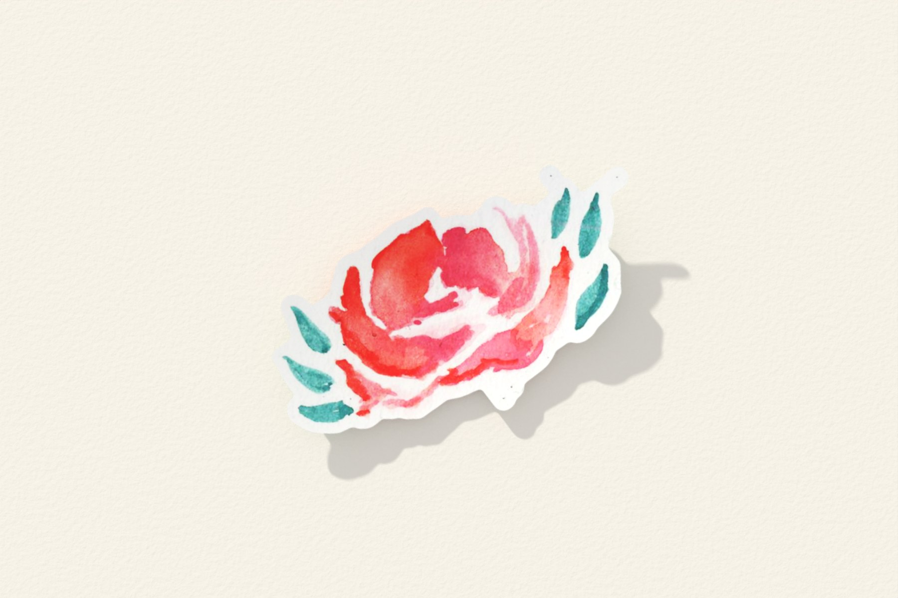
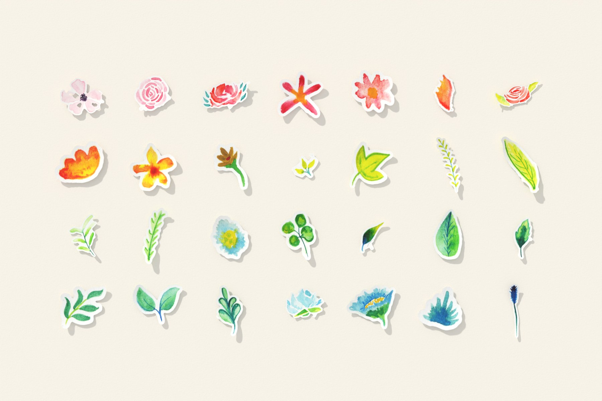
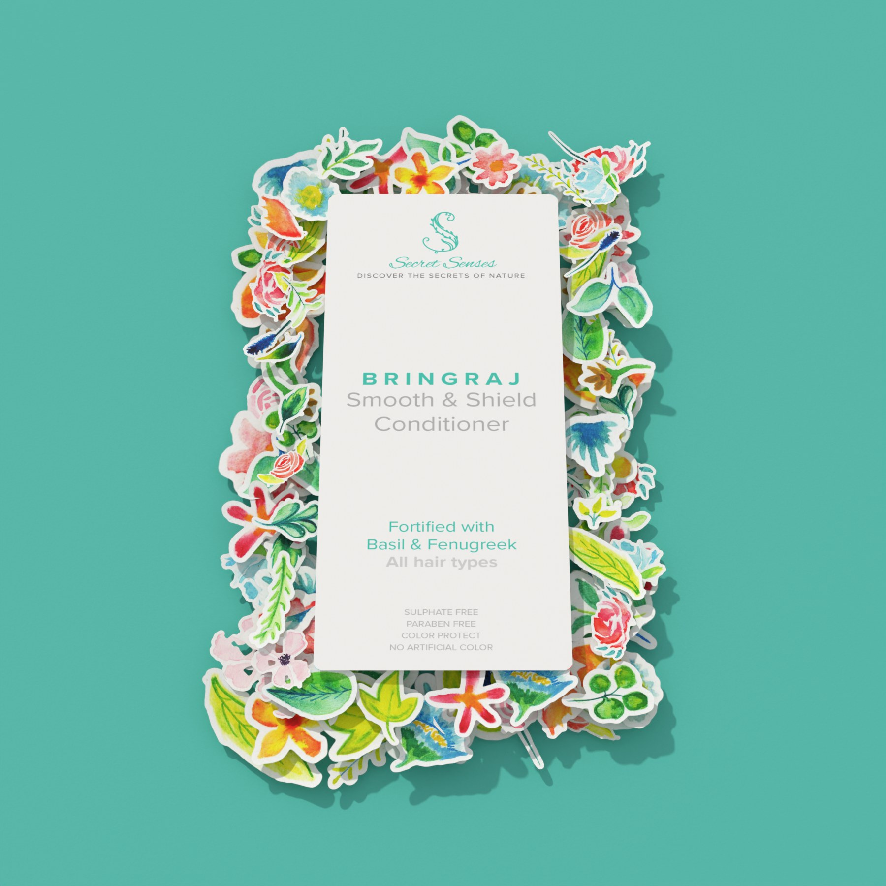
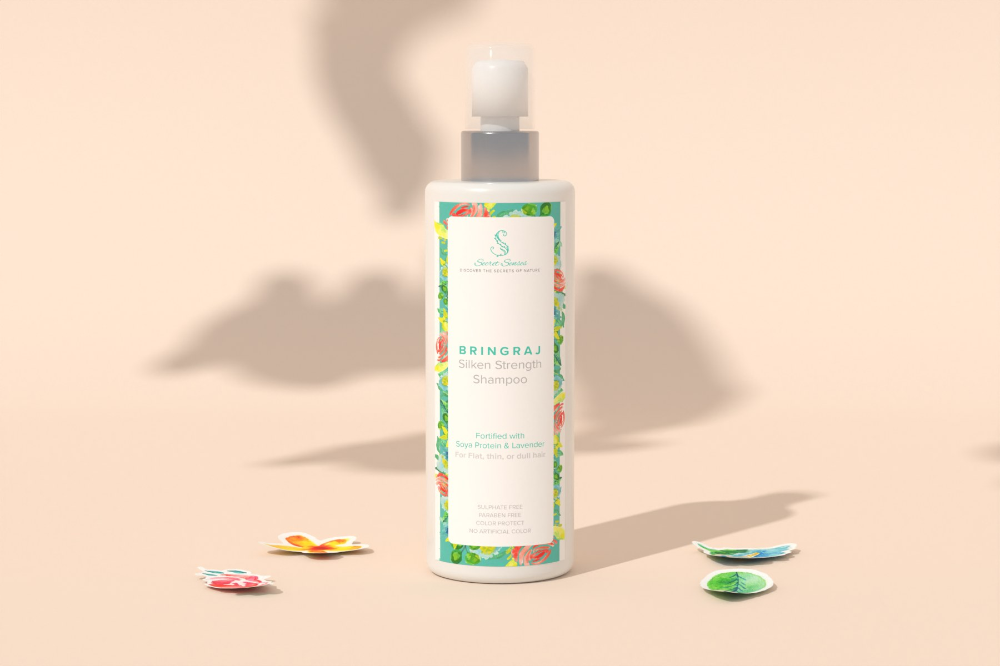
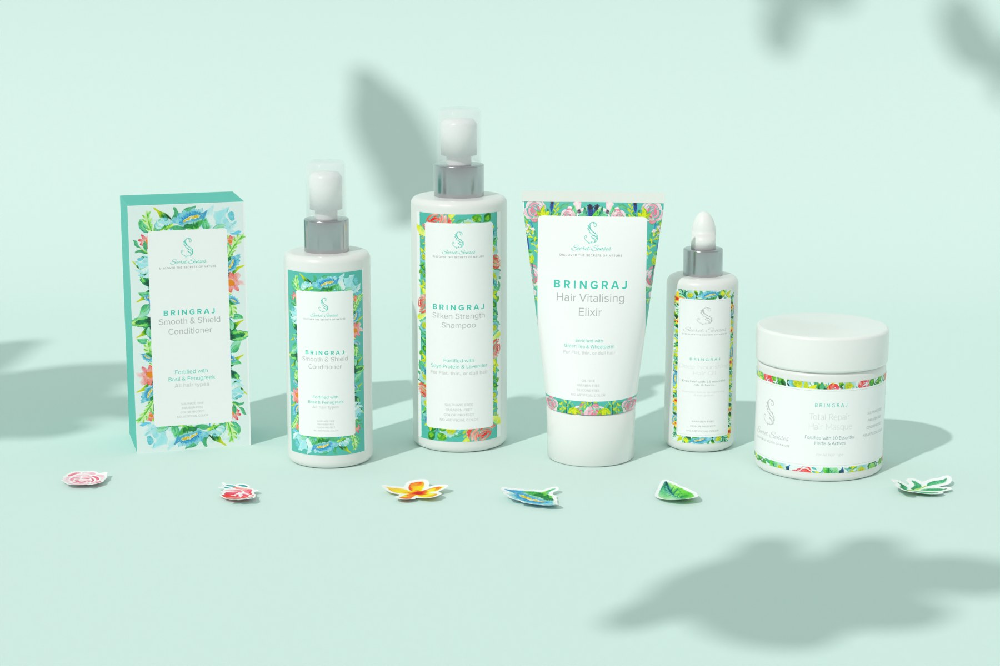

Study 53 · 2 November 2026
Secret Senses, by hand
Her 2016 watercolours and print files, built in Blender. Labels are the real ones; bottle shapes follow her mocks.
1 · One flower


2 · The whole hand


3 · The hand becomes the label

4 · On the bottle

5 · The family
